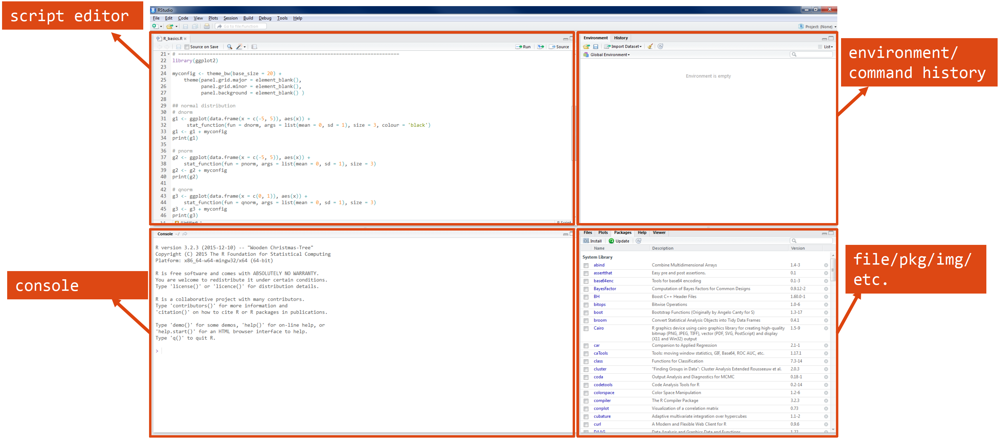
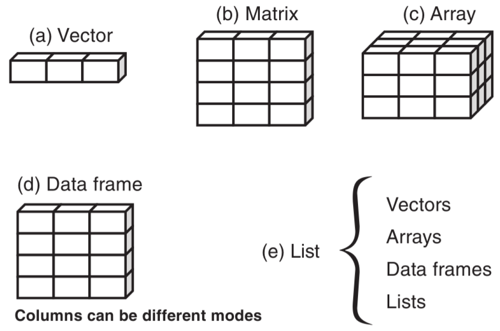
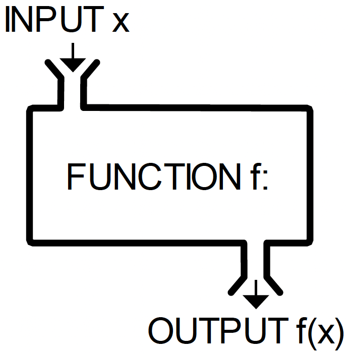
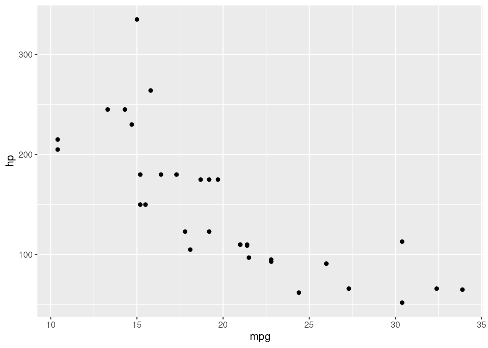
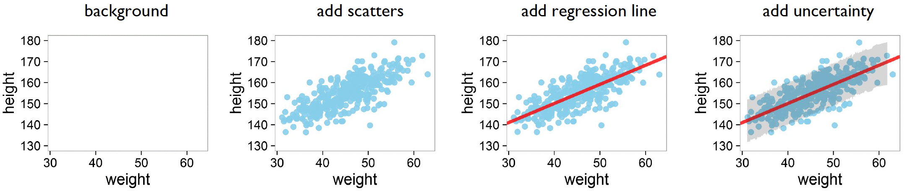

An overview of data structures, functions, packages and data visualization
R is a powerful open-source programming language and software environment primarily designed for statistical computing, data analysis, and graphical visualization. R has its own interface; when you install R onto your own computer(Windows/Mac) you can open R on it’s own. However, working in this way with R (‘base R’) isn’t very user friendly!
Instead, we use an IDE (Integrated Development Environment) to work with the R programming language. A popular example - and the one that we will be using - is RStudio.

The RStudio interface consists of 4 windows:
1. Script editor: Where you write and edit your R code 2. Console: Where you run R commands and see their output 3. Environment/History: Shows your workspace variables and command history 4. Files/Plots/Packages/Help: A multi-purpose pane for viewing files, plots, managing packages, and accessing help documentation
You can check your versions of both R and RStudio using the following commands:
R.version
_
platform x86_64-apple-darwin20
arch x86_64
os darwin20
system x86_64, darwin20
status
major 4
minor 4.1
year 2024
month 06
day 14
svn rev 86737
language R
version.string R version 4.4.1 (2024-06-14)
nickname Race for Your Life
An example where you might get a missing value would be in a behavioral experiment providing a fixed window for the participant to respond (e.g., 3 seconds). If they don’t respond in time, you can code their response as a missing value (NA), instead of leaving it blank. This is useful for any subsequent analyses where you might want to exclude or perform an operation on the missing values.
Data types, classes and variables
There are many types of data in R, here are some commonly used:
Numeric - Decimal numbers (the most common numeric type)
1.12.05.7892
Integer - Whole numbers only
1L # Note: L suffix denotes integer2L3L
Character/String - Text data in quotes
"hello world!"'R programming'"42"# Numbers in quotes are strings
Logical - Boolean values for conditional logic
TRUEFALSET # Shorthand for TRUEF # Shorthand for FALSE
Factor - a data type for categorical variables with fixed levels (categories).
In the example below, we create a vector of letters, some of which are repeated. However, the levels within are limited to each individual letter.
# Define a factor using lettersf <-factor(letters[c(1, 1, 2, 2, 3:10)]) # Create factor from letters with some repetitionf
[1] a a b b c d e f g h i j
Levels: a b c d e f g h i j
class(f) # Check class
[1] "factor"
Checking your data type
You can check data types using the following commands: class, typeof and str
class(1.1) # Shows type
[1] "numeric"
typeof("text") # Shows underlying type
[1] "character"
str(data) # Shows structure
function (..., list = character(), package = NULL, lib.loc = NULL, verbose = getOption("verbose"),
envir = .GlobalEnv, overwrite = TRUE)
Storing and manipulating variables
We commonly assign numbers and data to variables, which we can then compute directly:
# Define objects x and y with values of 3 and 2 respectively:x <-3y <-2# Some calculations with the defined objects x and y:x + y
[1] 5
x * y
[1] 6
Case sensitivity
R is case sensitive, so X and x are not the same object!
Basic R functions
We can perform basic statistics and operations on variables, such as getting the variance, standard deviation and summary statistics:
# Combine variables together to form a vector (a sequence of elements of the same type)c(1, 3, -2) # Creates numeric vector
[1] 1 3 -2
c("a", "a", "b", "b", "a") # Creates character vector
[1] "a" "a" "b" "b" "a"
# Create a vector to work withx <-c(1, 3, -2)# Variance and Standard Deviationvar(x) # Calculates variance
[1] 6.333333
sd(x) # Calculates standard deviation
[1] 2.516611
# Basic Statisticssum(x) # Sums all elements
[1] 2
mean(x) # Calculates mean
[1] 0.6666667
# Range Functionsmin(x) # Finds minimum
[1] -2
max(x) # Finds maximum
[1] 3
We can also manipulate and combine vectors together - either as columns or rows - and perform statistics on the combined output:
# Define two vectorsx <-c(1, 3, 4, 6, 8) # First vectory <-c(2, 3, 5, 7, 9) # Second vector# Combine vectors as columnscbind(x, y) # Creates a matrix with columns x and y
x y
[1,] 1 2
[2,] 3 3
[3,] 4 5
[4,] 6 7
[5,] 8 9
# Combine vectors as rowsrbind(x, y) # Creates a matrix with rows x and y
[,1] [,2] [,3] [,4] [,5]
x 1 3 4 6 8
y 2 3 5 7 9
# Calculate correlation between x and ycor(x, y) # Pearson correlation coefficient
[1] 0.988765
# Calculate covariance between x and ycov(x, y) # Covariance
[1] 7.65
Using cbind
cbind can be used to combine data across different files. For example, we can use cbind to combine data for a single participant that was recorded across multiple platforms or studies.
Miscellaneous commands
Here are some other commands that will be useful when working with R more generally:
Directory and Workspace Management
# Get current working directorygetwd()# Set working directory (example with different OS paths)setwd("C:/Users/Documents/R") # Windows stylesetwd("/home/user/Documents/R") # Unix/Mac stylesetwd("~/Documents/R") # Universal home directory# List files in current directorydir() # Same as list.files()
Environment Management
# List objects in workspacels()# Remove all objects from workspacerm(list =ls())
# Get help on functions?mean # Help for mean functionhelp("mean") # Same as above# Find functions containing keywordhelp.search("correlation") # Search help for "correlation"??correlation # Same as above
Essential RStudio Shortcuts
Here are some shortcuts that you can use in RStudio:
Shortcut
Action
Ctrl + L
Clean console
Ctrl + Shift + N
Create a new script
↑
Access command history
Ctrl(hold) + ↑
Search command history with current input
Ctrl + Enter
Execute selected code in script
These shortcuts work on Windows/Linux. For Mac, replace Ctrl with Cmd (⌘).
Data structures
R offers several data structures that serve different purposes. Each structure is designed to handle specific types of data organization, from simple one-dimensional vectors to complex nested lists1.

Vector (1-dimensional)
One-dimensional sequence of elements
All elements must be of the same type (numeric, character, etc.)
Example: c(1, 2, 3) or c("a", "b", "c")
Matrix (2-dimensional)
Two-dimensional arrangement of elements
All elements must be of the same type
Organized in rows and columns
Example: matrix(1:9, nrow = 3, ncol = 3)
Array (n-dimensional)
Extension of matrices to multiple dimensions
All elements must be of the same type
Can have 3 or more dimensions
Example: array(1:27, dim = c(3, 3, 3))
Data Frame
Two-dimensional structure similar to a spreadsheet
Different columns can contain different types of data
Most common structure for statistical analysis
Here are some examples of each datatype:
Vector
v1 <-1:12# Create numeric vector using sequencev2 <-c(2,4,1,5,1,6, 13:18) # Create numeric vector by combining values and sequencev3 <-c(rep('aa',4), rep('bb',4), rep('cc',4)) # Create character vector with repeated valuesclass(v1) # Check class of v1
[1] "integer"
class(v2) # Check class of v2
[1] "numeric"
class(v3) # Check class of v3
[1] "character"
Matrix and array
m1 <-matrix(v1, nrow=3, ncol=4) # Create matrix filled by columnm2 <-matrix(v1, nrow=3, ncol=4, byrow = T) # Create matrix filled by rowarr <-array(v1, dim=c(2,2,3)) # Create 3D array
class(m1) # Check class of matrix
[1] "matrix" "array"
class(arr) # Check class of array
[1] "array"
Data frame
df <-data.frame(v1=v1, v2=v2, v3=v3, f=f) # Create dataframe from vectorsclass(df) # Check class of dataframe
class(df$f) # Check class of fourth column (factor)
[1] "factor"
Using the $ Operator in R
The $ operator is used to access specific columns or elements within a list or data frame by name.
Suppose we have a data frame of students’ grades and want to access the ‘Math’ column:
# Create a data framestudents <-data.frame(Name =c("Alice", "Bob", "Charlie"),Math =c(95, 88, 92),Science =c(89, 94, 90))# Access the Math columnmath_scores <- students$Mathprint(math_scores)
[1] 95 88 92
Or if we wanted to get the class type for a column:
# Get the class of the "Math" columnmath_class <-class(students$Math)print(math_class)
[1] "numeric"
# Get the class of the "Name" columnname_class <-class(students$Name)print(name_class)
[1] "character"
Exercise 1: Basic R commands
1. Open the R_basics.R script (within _scripts) and practice basic R commands and data types.
Only work up until the “Control Flow” section of code.
TIP: use the class() and str commands.
Logical operators, control flow and functions
We commonly use logical operators in R to help make decisions in code and are essential in tasks like subsetting data, controlling loops, writing conditional statements, and filtering data.
Operator
Summary
<
Less than
>
Greater than
<=
Less than or equal to
>=
Greater than or equal to
==
Equal to
!=
Not equal to
!x
NOT x
x | y
x OR y
x & y
x AND y
Control flow
Control flow structures are fundamental building blocks in programming that determine how code executes. Two essential control flow mechanisms are if-else statements and for-loops:
If-else statements allow programs to make decisions based on conditions, enabling different code execution paths depending on whether conditions are true or false.
For-loops provide a way to automate repetitive tasks by executing code multiple times over a sequence of elements.
Here’s a simple example involving reaction time (RT) data, which we often want to clean by removing outliers and incorrect responses. We typically exclude RTs that are too fast (suggesting anticipatory responses) or too slow (suggesting inattention), as well as trials where participants made errors.
Here’s how we can do that using an if-else statement and a for-loop:
# Sample reaction time data (in milliseconds) with accuracy (1 = correct, 0 = error)rt_data <-c(245, 892, 123, 456, 2891, 567, 432, 345, 178, 654)accuracy <-c(1, 1, 0, 1, 1, 1, 0, 1, 1, 1)# Initialize vector for cleaned dataclean_rt <-numeric(length(rt_data))# Process each trialfor (i in1:length(rt_data)) {if (accuracy[i] ==1&& rt_data[i] >200&& rt_data[i] <2000) {# Include trial if:# - Response was correct (accuracy = 1)# - RT is above 200ms (not anticipatory)# - RT is below 2000ms (not too slow) clean_rt[i] <- rt_data[i] } else { clean_rt[i] <-NA# Mark excluded trials as NA }}# Calculate mean RT for clean trials onlymean_rt <-mean(clean_rt, na.rm =TRUE)mean_rt
[1] 526.5
In this example, the for-loop processes each trial, while the if-else statement excludes responses that are too fast (<200ms), too slow (>2000ms), or incorrect.
Functions
Functions are operation(s) that are performed to obtain some quantity based on another quantity. They are often analagous to a ‘black box’ which processes some input \(x\), to generate an output \(f(x)\).

There are three broad sources of functions within R:
Built-in functions: functions available automatically within R (e.g., mean, sum)
External functions: functions written by others (e.g., as part of a package)
User-defined functions: functions written by the user
A practical example of a user-defined functions is calculating the Standard Error of the Mean (SEM). The SEM measures the precision of a sample mean and is calculated as the standard deviation divided by the square root of the sample size minus one:
\[
SEM = \sqrt{\frac{s^2}{n-1}}
\]
Here’s how to implement this as a function in R:
# function to calculate Standard Error of Mean (SEM)sem <-function(x) {# Calculate: sqrt(variance / (n-1))# na.rm=TRUE removes NA values# na.omit(x) gives us the actual sample size excluding NAssqrt(var(x, na.rm=TRUE) / (length(na.omit(x))-1))}# Example usage:data <-c(23, 45, 12, 67, 34, 89, 21)sem(data)
[1] 11.31336
Exercise 2: Control flow and user-defined functions
1. Write an if-else statement to do the following:
Generate a random number between 0 and 1.
Compare it against 1/3 and 2/3
Print the random number and its position relative to 1/3 and 2/3
Click to see the solution
t <-runif(1) # random number between 0 and 1if (t <=1/3) {cat("t =", t, ", t <= 1/3. \n")} elseif (t >2/3) {cat("t =", t, ", t > 2/3. \n")} else {cat("t =", t, ", 1/3 < t <= 2/3. \n")}
Packages are collections of functions, data sets, and documentation bundled together to extend the functionality of R. They are not part of the base R installation but can be easily added and used in your environment.
R packages can:
Add functions: They contain pre-written functions that simplify common tasks or complex analyses. For example, packages like ggplot2 and dplyr offer powerful tools for data visualization and manipulation.
Provide data: Some packages include data sets that can be used for testing or teaching purposes. For example, the datasets package provides a collection of sample data sets.
Enable special features: Packages can implement specialized features like statistical models, machine learning algorithms, or tools for web scraping, reporting, and more.
How to use packages in R
Installing: You can install a package from CRAN (the Comprehensive R Archive Network) using the install.packages() function.
install.packages("ggplot2")
Loading: Once installed, you can load the package into your R session with the library() function.
library('ggplot2')
Usage: After loading the package, you can use its functions. For example, with ggplot2, you can create a plot like this:
ggplot(data = mtcars, aes(x = mpg, y = hp)) +geom_point()

Popular R packages include:
ggplot2: A powerful package for data visualization based on the grammar of graphics.
dplyr: A package for data manipulation (filtering, selecting, grouping, etc.).
tidyr: Used for tidying data, such as reshaping and pivoting.
shiny: For building interactive web applications in R.
You can find and install R packages from a number of sources:
Bioconductor: A repository specializing in bioinformatics packages.
GitHub: Many R developers host their packages on GitHub, which you can install using devtools or remotes packages.
Data visualization using ggplot2()
One of the main benefits of R is to create publication quality figures and graphs. There are a number of different functions within R that we can use:
built-in plotting functions e.g., plot()
lattice - similar to built-in plotting functions
ggplot2() - making nicer plots using a layering approach
We will now briefly cover ggplot2() as it is the most versatile and used approach to create complex figures.
ggplot2 is a powerful R package for creating complex and customizable data visualizations. It provides a systematic approach to building plots by combining two main components: geometries (geom) and aesthetics (aes).
Geometries (geom): These define the type of plot or visual elements you want to display. Common geoms include:
geom_point(): Displays data points (scatter plot).
geom_line(): Plots lines connecting data points.
geom_bar(): Creates bar charts.
Aesthetics (aes): These define how data is mapped to visual properties. The aesthetics determine the appearance of the plot, such as:
color: Specifies the color of the points, lines, or bars.
shape: Defines the shape of data points (e.g., circles, squares).
size: Controls the size of the points or lines.
Importantly, ggplot2() is built upon the layering of different components. For example, you can simply add more aes components to add a line of best fit, and standard error:

The R Graph Gallery
You can create many, many, many different types of graphs and plots using ggplot2(). You can check out it’s versatility by seeing examples at the R Graph Gallery.
Footnotes
Kabacoff, R. I. (2022). R in action: data analysis and graphics with R and Tidyverse. Simon and Schuster.↩︎